37.0041
133.067
Learning Data,
One Step at a Time.
Mahasiswa semester 2 yang sedang mencari pengalaman dalam data, kreativitas, teamwork, dan perkembangan diri melalui projek kecil dan proses belajar yang terus berkembang perlahan.
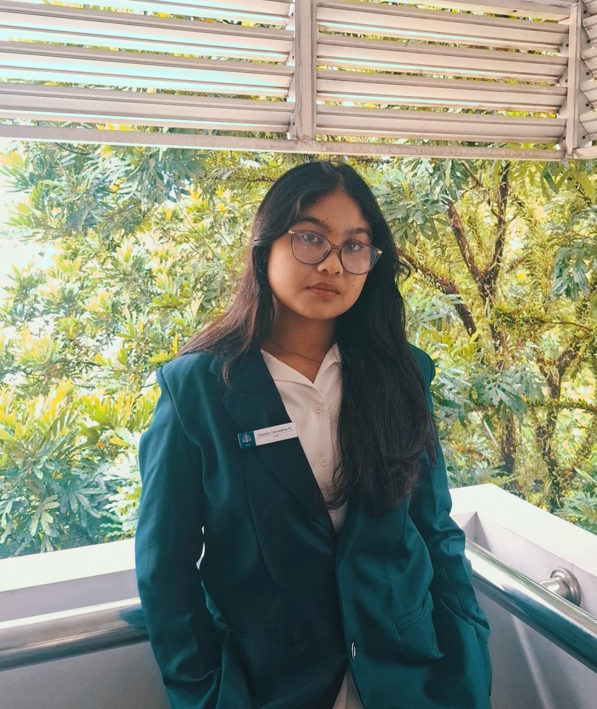
Memasuki dunia perkuliahan, beradaptasi dengan lingkungan baru, dan perlahan menemukan ketertarikan mendalam pada struktur data dan visualisasi.
Tentang Saya
Halo! Saya adalah seorang mahasiswa semester 2 yang saat ini sedang fokus mendalami pemrograman dasar dan pengolahan data demi mewujudkan cita-cita sebagai seorang Data Analyst.
Perjalanan ini bermula dari rasa tertarik yang mendalam terhadap perkembangan teknologi. Selama perkuliahan, saya menemukan minat yang kuat pada logika pemrograman, pengelolaan database, serta bagaimana data mentah dapat dieksplorasi dan diolah menjadi informasi yang bernilai. Bagi saya, memecahkan masalah melalui baris kode dan struktur data jauh lebih menantang dan menarik untuk ditekuni.
Website ini berfungsi sebagai jurnal digital sekaligus ruang belajar mandiri saya. Di sini, saya mendokumentasikan setiap proses saya dan proyek-projek data sederhana yang saya bangun secara konsisten untuk terus berkembang setiap harinya.
Timeline Perjalanan Belajar
Catatan tumbuh kembang dari awal menginjakkan kaki di dunia perkuliahan hingga saat ini.
Adaptasi & Mencari Minat
- Beradaptasi dengan lingkungan baru kampus
- Mengenal dunia perkuliahan & sistem akademik
- Berhasil mencapai indeks prestasi (IPK) yang memuaskan
- Belajar dasar manajemen waktu mandiri
- Eksplorasi minat baru di luar kelas formal
Pondasi Data & Kodingan Dasar
- Mulai mempelajari basis data (SQL Dasar)
- Memahami struktur informasi dan pemodelan data
- Belajar logika dasar algoritma & pemrograman komputer
- Mengikuti kepanitiaan acara kampus untuk teamwork
- Belajar menyusun mini project fungsional
Fokus UAS & Projek Akhir
Saat ini saya sedang mengerahkan fokus penuh untuk mempersiapkan Ujian Akhir Semester (UAS) serta menyelesaikan berbagai tugas besar kelompok (Projek Akhir). Di samping akademik, saya juga aktif berkontribusi dalam divisi kepanitiaan kampus guna mematangkan skill manajemen waktu, komunikasi, dan kerja sama tim secara real.
Pengalaman Kampus
Bukan sekadar mengejar prestasi, melainkan ruang kerja sama tim, dokumentasi momen, dan memperluas relasi.
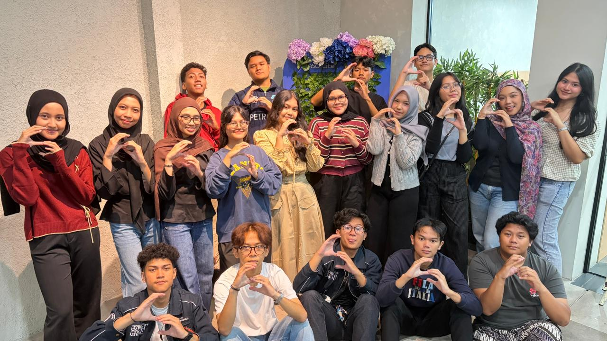
Aktif berkontribusi menyukseskan program kerja
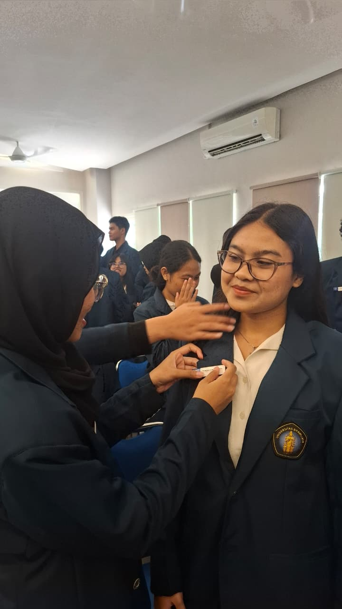
Melaksanakan dan mengembangkan program kerja
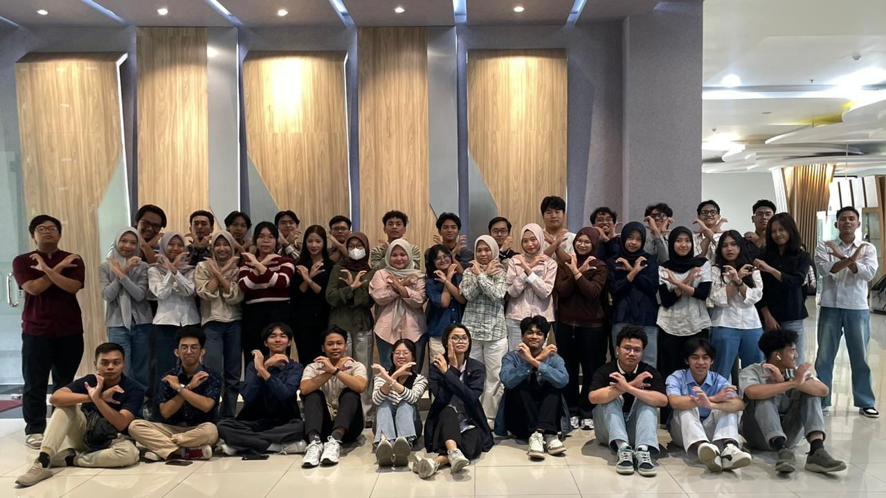
Melaksanakan tanggung jawab projek kelompok & mandiri
Catatan Kecil:
Bagian terbaik dari perkuliahan adalah atmosfer pertemanan hangat, kerja sama, dan pembelajaran nyata di luar teori.
Eksplorasi Projek Kecil
Daftar projek hasil eksperimen mandiri kuliah sebagai bukti nyata penerapan logika dan pemahaman.
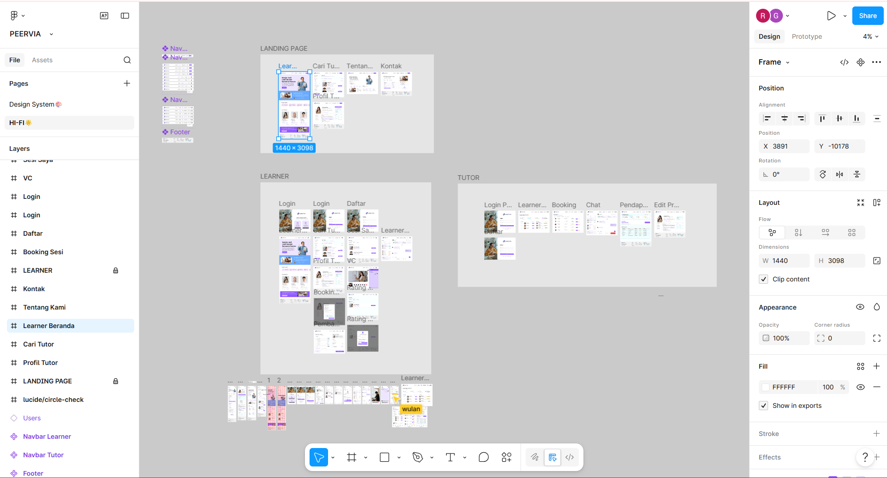
Hi-Fi Design System (Peervia)
Project menyusun visual tata letak sistem belajar mahasiswa ke mahasiswa di Figma.
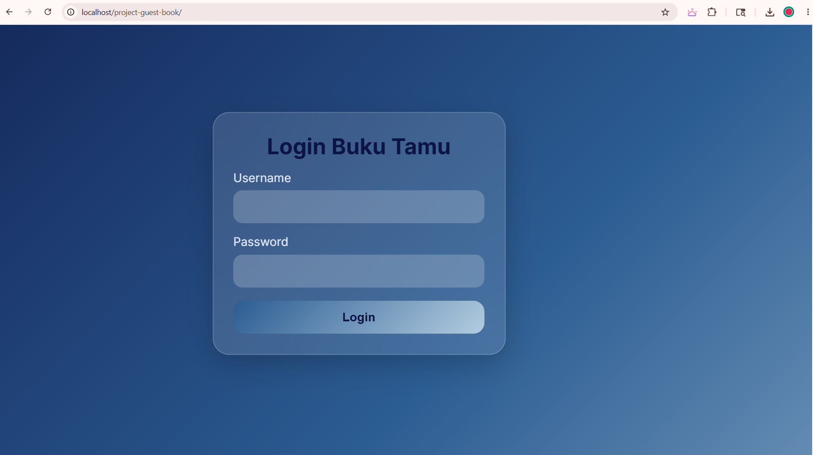
Aplikasi Web Buku Tamu Digital
Membangun sistem antarmuka halaman portal Login Buku Tamu.
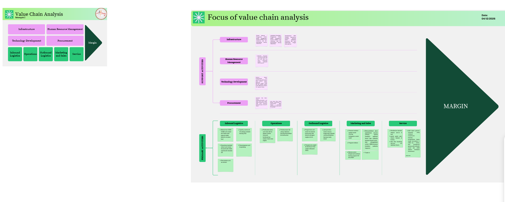
Focus of Value Chain Analysis
Pemetaan struktur aktivitas utama dan pendukung untuk optimalisasi margin proses bisnis.
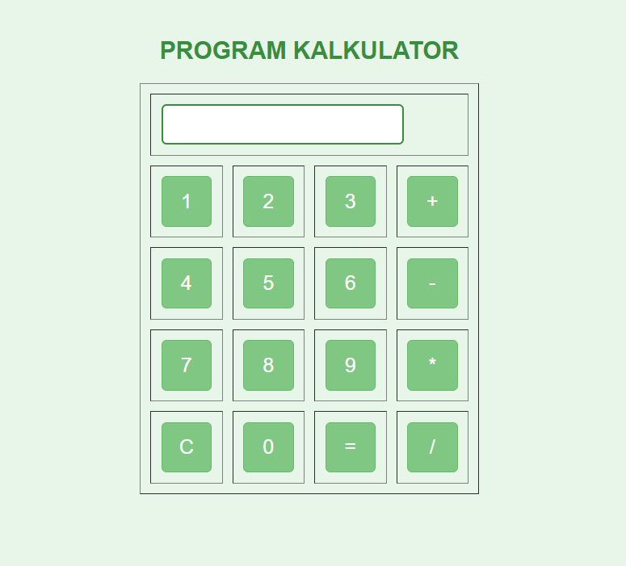
Program Kalkulator Interaktif
Pembuatan kalkulator sederhana menggunakan skema grid tata letak tombol operasi matematika.
Keahlian & Alat Kerja
Menghindari bar persentase yang kaku, digantikan dengan kumpulan bidang yang sedang saya pelajari secara bertahap.
Aplikasi / Tools Harian
Target Masa Depan
Langkah realistis dan sederhana yang ingin saya capai untuk bertumbuh lebih baik ke depannya.
Menguasai tools visualisasi data
Mulai mempelajari analisis data menggunakan Python
Membangun portfolio projek yang lebih rapi
Menjadi seorang Data Analyst yang andal
Galeri Memori & Suasana
Kumpulan cuplikan momen keseharian kuliah yang penuh cerita estetik.
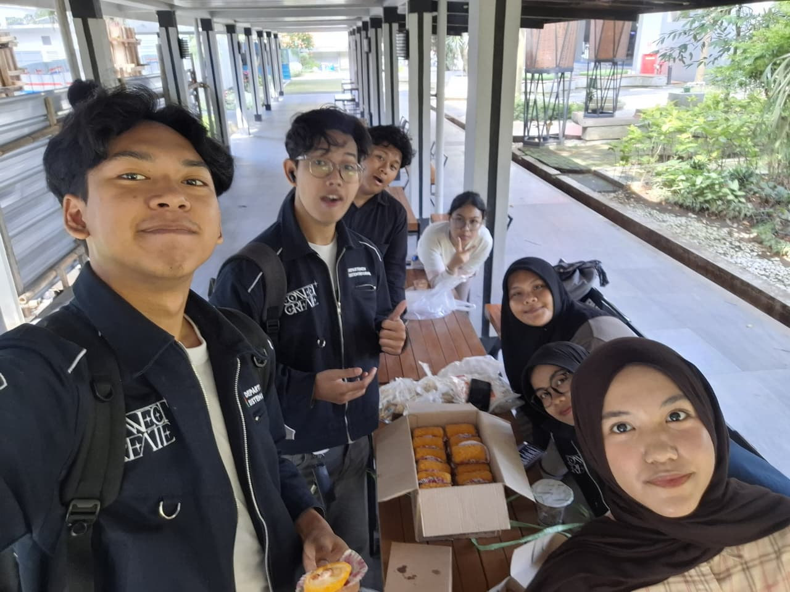
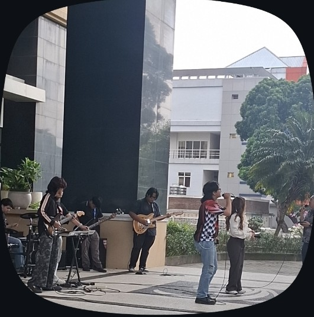
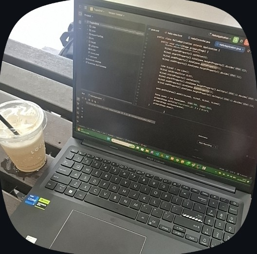
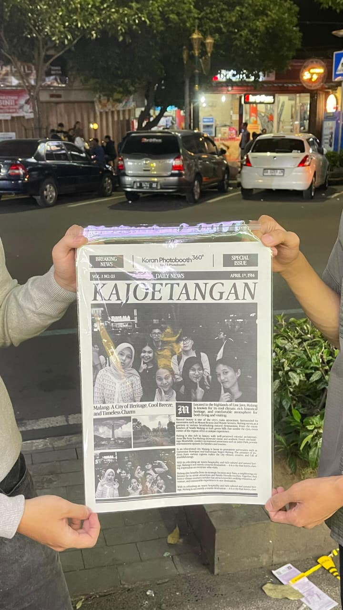